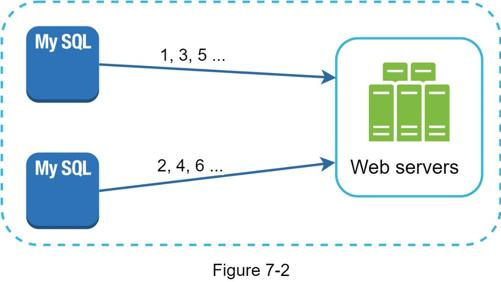
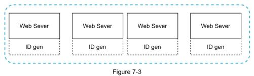
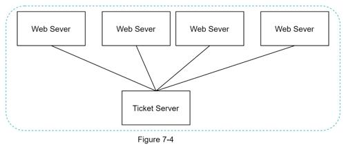
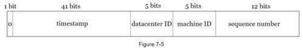

Multiple options can be used to generate unique IDs in distributed systems. The options we considered are:
•Multi-master replication
•Universally unique identifier (UUID)
•Ticket server
•Twitter snowflake approach
Let us look at each of them, how they work, and the pros/cons of each option.
As shown in Figure 7-2, the first approach is multi-master replication.

This approach uses the databases’ auto_increment feature. Instead of increasing the next ID by 1, we increase it by k, where k is the number of database servers in use. As illustrated in Figure 7-2, next ID to be generated is equal to the previous ID in the same server plus 2. This solves some scalability issues because IDs can scale with the number of database servers. However, this strategy has some major drawbacks:
•Hard to scale with multiple data centers
•IDs do not go up with time across multiple servers.
•It does not scale well when a server is added or removed.
A UUID is another easy way to obtain unique IDs. UUID is a 128-bit number used to identify information in computer systems. UUID has a very low probability of getting collusion. Quoted from Wikipedia, “after generating 1 billion UUIDs every second for approximately 100 years would the probability of creating a single duplicate reach 50%” [1].
Here is an example of UUID: 09c93e62-50b4-468d-bf8a-c07e1040bfb2. UUIDs can be generated independently without coordination between servers. Figure 7-3 presents the UUIDs design.

In this design, each web server contains an ID generator, and a web server is responsible for generating IDs independently.
Pros:
•Generating UUID is simple. No coordination between servers is needed so there will not be any synchronization issues.
•The system is easy to scale because each web server is responsible for generating IDs they consume. ID generator can easily scale with web servers.
Cons:
•IDs are 128 bits long, but our requirement is 64 bits.
•IDs do not go up with time.
•IDs could be non-numeric.
Ticket servers are another interesting way to generate unique IDs. Flicker developed ticket servers to generate distributed primary keys [2]. It is worth mentioning how the system works.

The idea is to use a centralized auto_increment feature in a single database server (Ticket Server). To learn more about this, refer to flicker’s engineering blog article [2].
Pros:
•Numeric IDs.
•It is easy to implement, and it works for small to medium-scale applications.
Cons:
•Single point of failure. Single ticket server means if the ticket server goes down, all systems that depend on it will face issues. To avoid a single point of failure, we can set up multiple ticket servers. However, this will introduce new challenges such as data synchronization.
Approaches mentioned above give us some ideas about how different ID generation systems work. However, none of them meet our specific requirements; thus, we need another approach. Twitter’s unique ID generation system called “snowflake” [3] is inspiring and can satisfy our requirements.
Divide and conquer is our friend. Instead of generating an ID directly, we divide an ID into different sections. Figure 7-5 shows the layout of a 64-bit ID.

Each section is explained below.
•Sign bit: 1 bit. It will always be 0. This is reserved for future uses. It can potentially be used to distinguish between signed and unsigned numbers.
•Timestamp: 41 bits. Milliseconds since the epoch or custom epoch. We use Twitter snowflake default epoch 1288834974657, equivalent to Nov 04, 2010, 01:42:54 UTC.
•Datacenter ID: 5 bits, which gives us 2 ^ 5 = 32 datacenters.
•Machine ID: 5 bits, which gives us 2 ^ 5 = 32 machines per datacenter.
•Sequence number: 12 bits. For every ID generated on that machine/process, the sequence number is incremented by 1. The number is reset to 0 every millisecond.